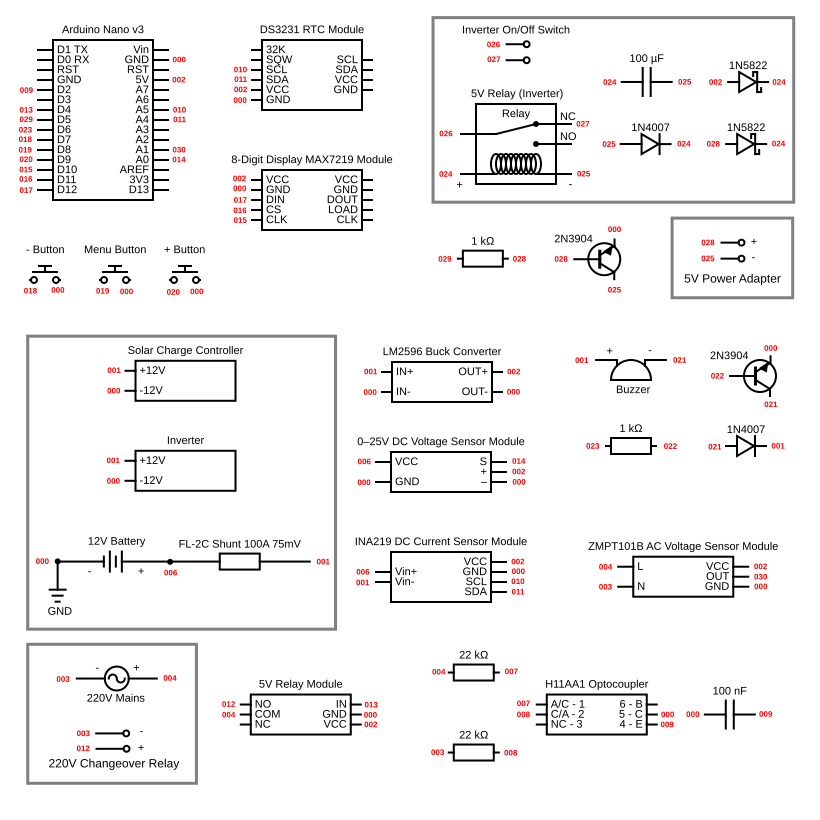
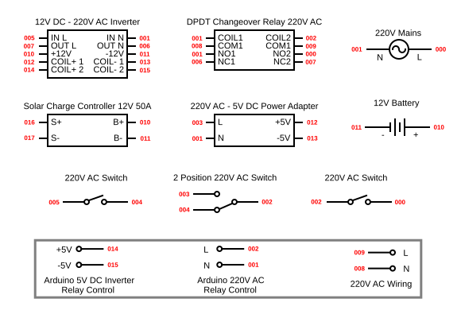
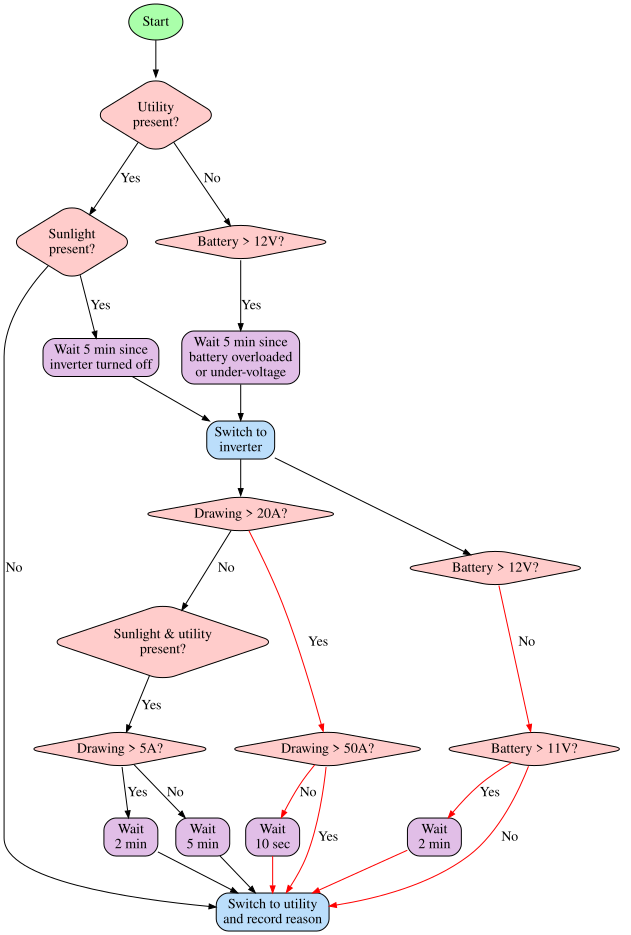

Solar and Battery Management System Using Arduino Nano
Project Objective
This project aims to develop a solar and battery power management system using an Arduino Nano. The system prioritizes solar energy during daytime (in SUB mode) to power an inverter and charge a battery, while intelligently switching to utility power (WAPDA) when necessary. The primary objective is to ensure continuous power availability while protecting the battery from overcharge (high charge quantity), over-feeding (high charging rate), over-discharge (high discharge quantity), and overload (high discharge rate) conditions.
System Overview
- Primary Power Source: 4 x 300W (Voc = 24V, Isc = 15A) PV solar array via a PWM charge controller.
- Backup Power Source: 220V 50Hz Utility grid (WAPDA).
- Storage: 12V 200Ah lead-acid tubular battery, which stays at ≈12.9V when fully charged, with no load and no charging.
- Load: 600W inverter powering AC appliances.
Operational Logic
- During daytime, power is drawn from PV array (according to solar on/off time settings and sunlight availability) to run the inverter and charge the battery.
- You can configure time (in minutes, before configured sunlight time) in which load is shifted from grid to solar if sunlight is sufficient to bear the load. Otherwise, load is silently shifted back to grid.
- Similarly, at evening, load is kept on solar as long as sunlight is sufficient.
- If sunlight is not sufficient to produce the minimum required current e.g. due to morning / evening or clouds, load is silently shifted to grid.
- If the inverter load exceeds solar supply and the battery begins to discharge, switch to grid, even during daytime.
- At night:
- If grid is available, use it instead of draining the battery.
- If grid is unavailable, use the battery to run the inverter as long as the battery state remains within safe operating limits.
- If USB mode is selected (instead of SUB), grid is always given priority. This can be useful in winters when not much power is needed during daytime. So inverter runs only during power outages.
Battery Protection Rules
-
Over-discharge protection
Inverter is turned off if battery voltage drops below
BVlow, even if there is no grid. A 2 minutes window is given if voltages remain above
BVcrit.
Discharging current is also limited to
BIhigh. A 10 seconds window is given if discharge rate is below
BIcrit (e.g. for torque load, or to allow PWM controller to draw more power from PV array).
-
Overcharge protection
Start beeping if battery is overcharged i.e. charged above
BVfull or at a rate higher than
BIhigh. We cannot control the PWM controller with Arduino. But we can cry.
Alarms
Raise alarm (start beeping) if any of the following is true:
- Battery is above
BVfull
- Battery is below
BVlow
- Battery is being charged at a rate higher than
BIhigh
- Battery is being discharged at a rate higher than
BIhigh
- During daytime, if sunlight is sufficient:
- Battery is being discharged (at any rate; we should be using solar)
- Inverter turned off (and switched to grid; we should be using solar)
- Exact reason of turning off the inverter is shown on screen. See warnings below.
Before raising alarms, give a 5-30 seconds window for temporary spikes / dips in battery voltage / current.
On-Screen Warnings
Inverter turned off (and switched to grid) due to:
- E 1: Battery low – voltage below
BVlow
- E 2: Battery overloaded – high current (>
BIhigh) drained
- E 3: Load higher than the solar power (during daytime) – due to morning / evening, clouds etc.
- E 4: Load higher than the solar power (during daytime) – your fault.
Display + Settings
- Use push buttons to jump to the next screen (center) and to change the configurable values (left and right).
- First 4 screens are informatory. On these screens, setting buttons turn off the display. Display also turns off if no activity is detected for 5 minutes. Press any button or wave hand (to trigger infrared obstacle detector) to turn the display back on.
- When display is on, waving hand before IR sensor rotates the display between informatory screens.
- On SAVE screen (last), setting buttons save the changed settings, if any. Then it jumps to the first screen. If it doesn't, there is a problem with the set values such as:
- Display jumps back to the first screen after 30 seconds of inactivity on settings screens.
Screens:
- Battery voltage (left, Volts) and current (right, Ampere)
- Battery voltage (left, Volts) and power being drawn from or fed to the battery (product of voltage and current) (right, Watt)
- Battery voltage (left, Volts) and temperature (right, °C)
- PV array voltage (left, Volts) and current (right, Ampere)
BVfull: Battery full charge voltage (Volts, range: 12.0-16.0, default: 14.4)BVlow: Battery discharged voltage low threshold (Volts, range: 10.0-13.0, default: 12.0 (≈ 50% DoD))BVcrit: Battery discharged voltage critical threshold (Volts, range: 9.0-12.0, default: 11.0)BIcrit: Battery discharge current critical threshold (Ampere, range: 20-60, default: 50)BIhigh: Battery discharge current high threshold (Ampere, range: 10-30, default: 20 (@ C10))BIlow: Battery discharge current low threshold (Ampere, range: 1-15, default: 5)- Prioritize solar or grid (Selection, options: SUB / USB, default: SUB)
- Delay before switching AC load to inverter after starting inverter (Seconds, range: 0-10, default: 5)
- Delay before switching AC load back to inverter after inverter turned off due to battery overloaded (high current drained) or voltage dropped, now no grid and battery is above
BVlow (Minutes, range: 1-10, default: 5)
- Delay before switching AC load back to inverter (daytime) after inverter was turned off due to sunlight not sufficient, now let's retry (Minutes, range: 15-60, default: 15)
- Delay before switching AC load back to inverter (daytime) after inverter was turned off for any other reason (Minutes, range: 1-10, default: 5)
- Window before switching AC load to grid if battery voltages are between
BVlow and BVcrit (Minutes, range: 1-10, default: 2)
- Window before switching AC load to grid if battery discharge current is between
BIcrit and BIhigh (Seconds, range: 5-60, default: 10)
- Window before switching AC load to grid (daytime) if battery discharge current is between
BIhigh and BIlow (Minutes, range: 1-10, default: 2)
- Window before switching AC load to grid (daytime) if battery discharge current is below
BIlow (Minutes, range: 1-15, default: 5)
- Clock time (24h format)
- Time before solar on time, try switch to solar (Minutes, range: 0-60, default: 0)
- Solar on time (24h format, range: 05:00-10:00, default: 07:00)
- Solar off time (24h format, range: 14:00-19:00, default: 17:00)
- Solar minimum current required from PV array (Ampere, range: 1-30, default: 15)
- Display brightness (Level, range: 1-10, default: 1)
- Buzzer loudness (Level, range: 1-10, default: 1)
- Save
Hardware Components
- Arduino Nano [1] – main controller for sensor reading and decision-making.
- INA219 Bi-Direction DC Current Sensor Module [2] [3] + FL-2C Shunt Resistor 100A 75mV [4] [24] – used to measure battery voltage and current (charging and discharging).
- Supply voltage: 3V-5.5V
- Input quiescent current: 1mA
- Default I2C Address: 0x40
- Recommended configuration is to sense high-side current i.e. shunt is connected to the positive terminal of battery, and negative terminal is shared with circuit GND.
- Max bus voltage (across Vin- and GND): 0V – 26V (makes sense only in case of high-side sensing)
- Max measurable current:
- With on-board R100 (0.1 Ω) SMD shunt: 3.2 A
- With 100A 75mV (= 0.00075 Ω) shunt: 436A (= 0.32767V / 0.00075Ω, theoretically)
- When sensing high-side, bus voltage + shunt voltage gives the battery voltage.
- Alternatively, use 0–25V DC Voltage Sensor Module [5]
- INA219 Bi-Direction DC Current Sensor Module [2] [3] + FL-2C Shunt Resistor 100A 75mV [4] [24] + 3 x 6N137 Optocoupler [30] – used to measure PV voltage and current.
- Required because PWM charge controller does not have common GND across its input (PV array) and output (battery) sides.
- INA219:
- Input pins (IN+ & IN-) bias current: 20μA
- Output pins: SCL is input-only (doesn't do clock-stretching), SDA is I/O
- Both are open-drain, so need to be pulled-up.
- SDA/SCL sink current: 10mA ("Open-drain digital output current" [31])
- Bus line will be at VOL (low-level output voltage) ≤ 0.4V when sinking 3mA.
- Sinking more than 3mA may pull the pin up so that INA219 no more recognize it as LOW.
- Input/waiting mode: Sinks ~1mA with 4.7kΩ pull-up resistor (VCC = 5V)
- Output mode: Use a MOSFET buffer if sink current is high (e.g. to drive an opto-coupler LED).
- Sinks ~3.6mA with 1kΩ series resistor with an LED (VCC = 5V, VF = 1.4V)
- Remaining details are same as that of battery sensor.
- 6N137:
- Input HIGH -> Output LOW (leave VE unconnected)
- Output is an open-collector Schottky-clamped transistor. So needs to be pulled-up. Recommended: 330Ω-4kΩ
- Supply voltage: 4.5V-5.5V
- Supply current: 5~10mA (@ VCC: 5V, IF: 5mA)
- LED input current (IF): 5mA-15mA
- LED voltage drop (VF): 1.4V (@ IF: 10mA)
- Output current (ICL): 50mA
- Output voltage drop: 0.6V (@ IF: 5mA, ICL: 13mA)
- Better alternatives:
- DC-DC isolated power converter (like B0505S) + INA219 + I2C digital isolator (like ADuM1250 / ISO1540)
- Instead of digital isolation, do analog isolation. Use a galvanically-isolated sensor, like ACS758 (for current only), which is a hall-effect based linear current sensor. LV 25-P is a similar one for voltage sensing.
- A more complex way to detect sunlight sufficiency is by using a BH1750 Light Sensor Module [8].
- ZMPT101B AC Single Phase Voltage Sensor Module [6] – measures grid voltage. Alternatively, simply detect the presence of AC power using:
- 220V AC to 5V DC Converter
- AC 220V Optocoupler Isolation Module
- H11AA1 Optocoupler [15]
- Input LEDs forward voltage drop: 1.2-1.5V, forward current: 10mA (max 60mA).
- DS3231 Precision RTC Module [7] – remembers time so that to schedule solar on / off time in the morning and evening respectively.
- Relay Module [9] (in NO mode) – used to switch AC load between grid and inverter output.
- 5V Relay [10] (in NC mode) – used to turn off inverter when not needed (to save battery) or during battery protection events. This relay is installed inside the inverter in series with the main power button.
- 8-Digit Display MAX7219 Module [11] – show battery (dis)charge current / voltage / power, and configurable values.
- 5-12V Active Buzzer [12] – for alarms.
- Max current: 40mA (at 12V)
- 3 x Push Buttons (momentary) [13]:
- Left (DOWN): Decrease a configurable value (setting).
- Center (MENU): Switch between screens and turn off the display.
- Right (UP): Increase a configurable value (setting).
- IR Obstacle Sensor [22]:
- Wave hand to turn on the display, or rotate between informatory screens.
- 5V 0.5W Fan [28] – used for cooling
- MP2307 Buck Converter [21] – converts 12V to 9V for Arduino Nano.
- LM2596 Buck Converter [14] – converts 12V to 5V for other modules.
Minor Parts
For PV Current / Voltage Sensing
- LM78L05 5V Regulator [29] – converts PV 12V-25V to 5V for PV side circuit.
- TL431 Regulator [32] – cuts-off LM78L05 input if PV drops below 7V.
- 2N3906 PNP BJT – provides feedback to TL431 (for hysteresis) and drives LM78L05.
- Resistors:
- 1 x 100kΩ
- 1 x 22kΩ
- 1 x 10kΩ
- 1 x 6.8kΩ
- 4 x 4.7kΩ
- 1 x 2.2kΩ
- 3 x 1kΩ
- Capacitors:
- 5 x 0.1µF 50V Ceramic
- 1 x 10µF 50V Ceramic
- 1 x 100µF 50V Electrolytic
- Zener Diodes:
- Veroboard Dotted (60mm x 40mm) – circuit designing
For Buzzer:
- 2N3904 NPN BJT – controls voltage supply (5-12V) to the buzzer to adjust the loudness.
- Collector-emitter voltage: 40V
- Max collector current: 200mA
- Max base current: 20mA (200mA / 10)
- Max base-emitter voltage drop: 0.95V (fully saturated)
- Transition frequency: 300MHz | Rise/fall time: 35ns (switching speed matters for PWM)
- Linearity:
- Base voltage vs. collector current is exponential.
- For linearity, use 2N3904 in closed-loop with an op-amp like LM358 / CA3130.
- For even more accuracy, use a DAC like MCP4725 instead of filtered PWM.
- 470 Ω resistor – between the transistor (2N3904) base and Arduino pin to protect high current draw.
- For 100mA current draw from the transistor (5V - 0.7V / 10mA)
- 1N4007 diode – for flyback protection with the buzzer.
- Insert an RC filter (b/w Arduino and transistor, or b/w transistor and buzzer), or only a capacitor parallel to the buzzer, to flatten / smooth out the averaged output of PWM.
For Relay (inverter)
- 2N3904 NPN BJT – drives the relay.
- 470 Ω resistor – between the transistor (2N3904) base and Arduino pin to protect high current draw.
- For 100mA current draw from the transistor (5V - 0.7V / 10mA)
- 1N4007 diode – for flyback protection at the relay coil.
- 47µF 16V capacitor – for stabilizing voltage at the relay coil.
- Purpose is to act as a local energy reservoir, supplying extra current to avoid the voltage dip during the initial surge when the relay coil is energized. But size it wisely (or add a small resistor in series) to avoid high inrush current to the capacitor itself when the transistor turns on (though BJTs can tolerate short over-current spikes).
- 2 x 1N5822 Schottky diode – for diode ORing. Power sources isolation is required because inverter relay is triggered from 2 sources in parallel: Arduino and a power adapter. Latter is used to bypass the protection system.
For Fan
- 2N2222A transistor – drives the fan.
- 220Ω-330Ω resistor – between the transistor (2N2222A) base and Arduino pin to protect high current draw.
- For 130~200mA current draw from the transistor (5V - 0.7V / 13~20mA)
- Fan current draw is less than 100mA.
- 1N4007 diode – for flyback protection.
Others:
- 3 Pin T-Block Connector – AC mains connections:
- 220V live
- 220V neutral
- Output of Relay Module to switch AC load between grid and inverter output. It controls a high-power 220V-driven changeover relay. Latter can also be triggered from AC mains to bypass the protection system.
- 4 x 2 Pin T-Block Connector for:
- 12V supply (battery)
- Relay (inverter)
- 2 x FL-2C Shunt Resistor
- 1A Fuse + Fuse Holder – for whole circuit's protection.
- High-frequency electrical noise from the inverter may cause excessive RMS current in fuse, even though DC measurement appears low (multimeter shows average DC). This high RMS may cause localized heating in fuse due to skin effect. To avoid this:
- Use a slow-blow fuse.
- Or run dedicated pairs of wires (positive and negative) from the battery to the inverter and Arduino circuit.
- Or at least use a long wire for Arduino circuit power supply.
- DC Power Jack (male + female) – to make a detachable connection to Relay (inverter).
- Veroboard Dotted (145mm x 65mm) – circuit designing.
- 2.54mm Pitch Female Header – soldered with the veroboard to connect the sensor modules.
- Plastic Enclosure Box (160mm x 96mm x 50mm) – enclose the circuit.
- 4 x Plastic PCB Circuit Board Spacer – between veroboard and the box bottom.
- 2-Core Cable – for 12V power supply, Relay (inverter) and FL-2C Shunt Resistor connections.
- 3-Core Cable – for AC connections.
Connections
1. INA219 Current Sensor & FL-2C Shunt (Battery)
- Shunt Resistor: Place between the battery positive terminal and the load.
- INA219:
Vin+ → Shunt's battery-side terminal (charging would give negative current value)Vin– → Shunt's load-side terminal (also connected to +ve terminals of inverter and solar charge controller)GND → GND railVCC → 5V railSDA → Arduino Nano A4 (SDA)SCL → Arduino Nano A5 (SCL)
- Should remove the on-board SMD shunt? If 0.00075 Ω shunt is placed in parallel with the onboard 0.1 Ω SMD resistor, it becomes 0.0007444 Ω. At 50A:
- Voltage drop: 37.2 mV
- Current and power dissipation are within limits (so no need to remove the on-board SMD shunt):
- External shunt: 49.6 A (1.85 W dissipation)
- Internal shunt: 372 mA (13.8 mW dissipation)
2. INA219 + FL-2C Shunt + 6N137 (PV Array)
- Power Supply:
- UVLO:
- Voltage Divider:
- PV+ → 22kΩ → Junction → 10Ω → PV-
- Drops 8V to ~2.5V for TL431 reference.
- TL431:
REF →
- Divider junction
- 2N3906 feedback
- Anode → PV-
- Cathode →
- 6.8kΩ → PV+ (for minimum 1mV load)
- 2N3906 signal
- 2N3906:
- Emitter → PV+
- Base → 2.2kΩ → TL431 cathode (≥2mA current)
- Collector →
- LM78L05 input
- 100kΩ → TL431
REF
- Hysteresis: ~1V:
- Turn-on:
- Turn-off:
- LM78L05:
OUT → INA219 + 6N137 power input
- Power dissipation: (ALARMING !!! May go up to ~100°C)
GND → PV-IN → 2N3906 collector
- Shunt Resistor: Place in series with the charge controller positive input.
- INA219:
- Connections:
Vin+ → Shunt's PV-side terminalVin– → Shunt's controller-side terminalGND → LM78L05 GND (PV-)VCC → LM78L05 5VSDA, SCL → 6N137 LED Cathode, VO
- To change the I2C address from default (0x40) to 0x41, solder the
A0 points.
- 3 x 6N137:
- U1, U2:
LED Anode → Arduino-side 5V railVCC → LM78L05 5VGND → LM78L05 GND (PV-)
- U3:
LED Anode → LM78L05 5VVCC → Arduino-side 5V railGND → Arduino-side GND rail
- U1:
LED Cathode → 1kΩ → Arduino Nano A5 (SCL)VO → INA219 SCL
- U2:
LED Cathode → 1kΩ → Arduino Nano A4 (SDA)VO → INA219 SDA
- U3:
LED Cathode → 1kΩ → INA219 SDAVO → Arduino Nano A4 (SDA)
- I2C Pull-Ups:
- Arduino Nano A4, A5 (SDA/SCL) → 4.7kΩ → Arduino-side 5V rail
- INA219 SCL/SDA → 4.7kΩ → LM78L05 5V
Filtering:
- Add 0.1µF Ceramic Capacitor (high frequency decoupling) to all power inputs (INA219, 6N137).
- PV+ ... PV- (before UVLO):
- 100µF Electrolytic Capacitor (stability)
- 10µF Ceramic Capacitor
- 0.1µF Ceramic Capacitor
Protection:
- 1N5361B 27V Zener Diode between PV+ and PV- (before UVLO, anode to PV-)
- 1N4733A 5.1V Zener Diode between LM78L05
OUT and GND (anode to GND)
3. ZMPT101B AC Voltage Sensor
VCC → 5V railOUT → Arduino Nano A1GND → GND rail- AC Side:
L → Live (220V)N → Neutral (220V)
4. DS3231 RTC Module
VCC → 5V railGND → GND railSDA → Arduino Nano A4 (shared with INA219)SCL → Arduino Nano A5 (shared with INA219)
5. 5V Relay Module (AC Changeover)
VCC → 5V railGND → GND railIN → Arduino Nano D4 (control signal)- AC Load:
- Relay
COM → 220V Live
- Relay
NO → Changeover coil (Live side)
- Changeover coil Neutral → 220V Neutral
6. 5V Relay (Inverter)
- Power ORing:
- Diode 1: Arduino circuit 5V rail → Anode of 1N5822 → Cathode to relay coil+
- Diode 2: External 5V+ adapter → Anode of 1N5822 → Cathode to relay coil+
- Transistor Driver:
- Arduino D5 → 1 kΩ resistor → 2N3904 Base
- 2N3904 Emitter → GND
- 2N3904 Collector → Relay coil-
- Protection:
- 1N4007 flyback diode across relay coil (reverse polarity: cathode to 5V, anode to GND terminal).
- 100 µF capacitor across relay coil+ and coil-.
- Relay
COM and NC → Inverter on/off switch
- External 5V- adapter → Relay coil-
7. MAX7219 8-Digit Display
VCC → 5V railGND → GND railDIN → Arduino Nano D12 (MISO)CS → Arduino Nano D11 (MOSI)CLK → Arduino Nano D10 (SS)
8. 5–12V Active Buzzer
- Driver Circuit:
- Arduino Nano D6 (PWM frequency: ~976 Hz) → 1 kΩ resistor → 2N3904 Base
- 2N3904 Emitter → GND
- 2N3904 Collector → Buzzer negative terminal
- Buzzer positive terminal → 12V+ battery
- Protection:
- 1N4007 diode across buzzer (reverse polarity: cathode to 12V+, anode to GND terminal).
9. Push Buttons (x3)
- Each Button:
- One terminal → GND
- Other terminal → Arduino Nano D7, D8, D9 (digital inputs with internal pull-up enabled).
10. IR Obstacle Sensor
VCC → 5V railGND → GND railOUT → Arduino Nano D3
11. Fan
- Transistor Driver:
- Arduino D2 → 330Ω resistor → 2N2222A Base
- 2N2222A Emitter → GND
- 2N2222A Collector → Fan-
- Protection:
- 1N4007 flyback diode across fan (reverse polarity: cathode to 5V, anode to GND terminal).
12. MP2307 Buck Converter
- Input:
IN+ → Shunt's load-side terminal (other side is connected to battery 12V+)IN- → Battery 12V-
- Output:
OUT+ → Arduino Nano VIN pin.OUT- → Arduino Nano GND (and common ground).
13. LM2596 Buck Converter
- Input: Same as MP2307.
- Output:
OUT+ → All 5V modules and other circuit components.OUT- → Common ground.
14. Power Supply Summary
- 12V Battery:
- Powers MP2307 (converted to 9V for Arduino).
- Powers LM2596 (converted to 5V for modules).
- Directly feeds buzzer (12V).
- Also connected to inverter and solar charge controller (+ve side through shunt resistor).
- 220V AC:
- Feeds ZMPT101B AC voltage sensor and relay module (for changeover coil).
Schematics
Arduino Circuit:

Solar and AC (Grid + Inverter) Circuit:

Flowchart:

Code:
https://github.com/mirfatif/SolarBMS/SolarBMS.ino
Libraries:
Finally:

Links
- https://digilog.pk/products/arduino-nano-v3-with-usb-cable-in-pakistan
- https://digilog.pk/products/ina219-bi-direction-dc-current-power-supply-sensor-module-gy-219-module-in-pakistan
- https://wolles-elektronikkiste.de/en/ina219-current-and-power-sensor
- https://www.aliexpress.com/item/1005007796473791.html
- https://digilog.pk/products/dc-0-to-25v-voltage-sensor-module-for-arduino-in-pakistan
- https://digilog.pk/products/zmpt-single-phase-ac-voltage-sensor-module-in-pakistan
- https://digilog.pk/products/ds3231-rtc-module
- https://instock.pk/ambient-light-intensity-lux-sensor-bh-1750.html
- https://digilog.pk/products/1-channel-5v-arduino-relay-module-in-pakistan
- https://digilog.pk/products/spdt-6v-or-5v-relay
- https://digilog.pk/products/max7219-8-digit-7-segment-module-assembled-in-pakistan
- https://digilog.pk/products/buzzer-alarm-active-piezo-electronic-wires-dc-3-12v
- https://digilog.pk/products/12x12x9mm-tactile-push-button-switch
- https://digilog.pk/products/411a-lm2596-buck-converter-step-down-module-power-supply
- https://digilog.pk/products/h11aa1-optocoupler-dip-6-pin-ic
- https://github.com/NorthernWidget/DS3231
- https://github.com/wollewald/INA219_WE
- https://github.com/JemRF/max7219
- https://github.com/Abdurraziq/ZMPT101B-arduino
- https://github.com/kotwatthana/TimerOne_V2
- https://digilog.pk/products/mini-360-dc-to-dc-step-down-buck-converter-module-in-pakistan
- https://digilog.pk/products/ir-infrared-obstacle-avoidance-sensor-module-in-pakistan
- https://digilog.pk/products/hcpl-7840-smd-optocoupler-in-pakistan
- https://industryparts.pk/products/fl-2c-75mv-current-meter-shunt-dc-ammeter-splitter
- https://digilog.pk/products/ca3130-operational-amplifier-in-pakistan
- https://digilog.pk/products/lm7805-7805-voltage-regulator-5v-voltage-regulator
- https://www.rcscomponents.kiev.ua/datasheets/hcpl-7840-000e-datasheet.pdf
- https://digilog.pk/products/5v-raspberry-pi-cooling-fan-in-pakistan
- https://digilog.pk/products/lm78l05-78l05-voltage-regulator-5v-voltage-regulator-to-92
- https://digilog.pk/products/6n137-high-speed-optocoupler
- https://www.ti.com/lit/ds/symlink/ina219.pdf
- https://digilog.pk/products/tl431-regulator-in-pakistan